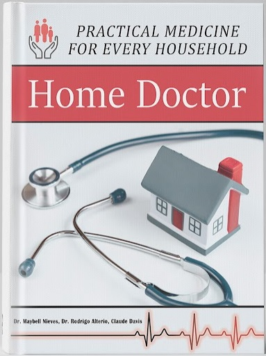

The Home Doctor: Practical Medicine for Every Household" is a comprehensive guide written and approved by doctors on how to manage a wide range of health situations when professional medical assistance is not readily available. The book is 304 pages long and covers everything from common ailments like colds and flu to more serious conditions like heart disease and cancer. In addition to traditional remedies, the book also includes modern, scientifically-backed solutions and provides tips and tricks for how to use natural ingredients effectively and safely. It also includes chapters on how to build a home apothecary and how to create your own natural remedies from common ingredients. The book even offers guidance on how to identify and treat common health issues in children and pets. This book is particularly valuable for those who may find themselves in a situation where access to professional medical care is limited, such as in a natural disaster or in a rural area where access to healthcare facilities is limited. In such situations, it is important to have knowledge and resources for managing health issues and maintaining wellness. "The Home Doctor" is a valuable resource for anyone looking to take a more proactive approach to their health and the health of their loved ones.
Click right here to learn more about our products and how they can help you.